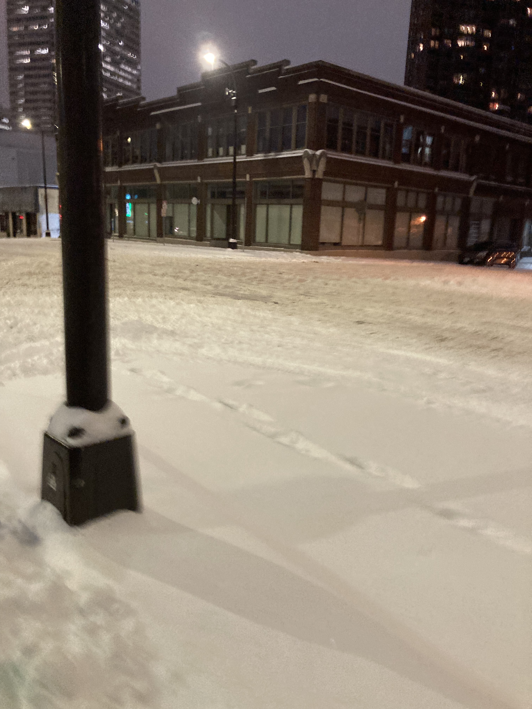
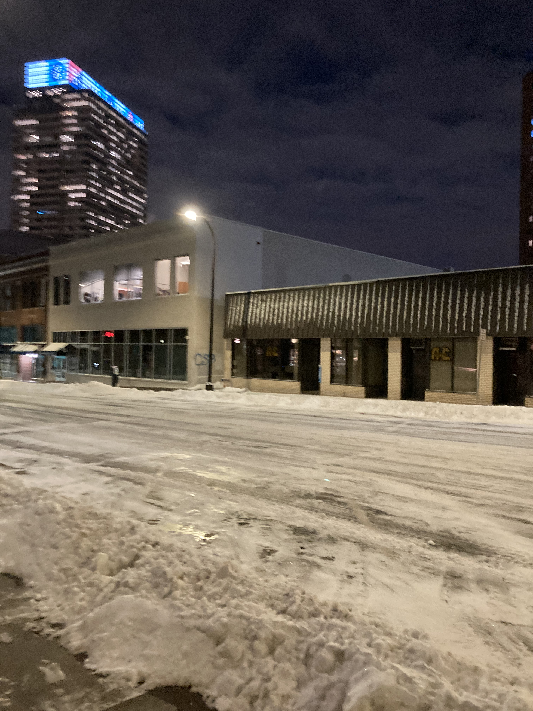

Minneapolis has been real cold, y'all. Like, proper cold, solid "0-30deg all the last month" cold. Here's some photos! Of it being snowy!


The night and the morning!
Now, if you know me, you know I love iced mochas almost as much as I love the cold, or snow, or darkness. Like damn, they're so good! So I, awhile now in Minneapolis, have been walking to my local Lunds and Byerly's Caribou Coffee in the morning, to get a dark chocolate iced mocha with 2% with [either a white frosted cake donut or a raised glazed donut] and [either a chocolate croissant or a kolachi danish (not the Texas kind)]. I just went a few minutes ago. The barista knew my order, and rung it up as I was approaching. How cool. How awesome.
I just ate the chocolate croissant, the one of two options that I decided upon this time. The other one of two options I chose was a raised glazed donut, which I will eat in a little while. Good stuff. And the iced mochas really do change day by day, but the one today is... pretty swell.
I felt real haughty, walking to and from the Lunds and Byerly's Caribou Coffee a block from me. I've been wearing my naval bridge coat, as featured in these two blog posts, and it's absolutely perfect for the weather, and I feel so cool wearing it. People wish they were as warm as my naval bridge coat. I went to dinner last night with my family — visiting, for a bit, to pick me up for winter break (as I cannot drive for longer than 3 hours without severe leg pain) — and they were very cold, in their measly puffy winter jackets, while we were walking to and from the restaurant 2 blocks from my apartment, and my god, I felt like a god. I was so warm! I was probably pretty rude in how much more awesome than them I felt while outside in the cold. I slowed down for a bit to talk to my sister, the coldest of them all, because she looked kinda sad, and I didn't want her to be sad. I fuckin', I love this coat so much y'all. It's the best! It's the best coat there is.
While walking to the Lunds and Byerly's Caribou Coffee this morning, I was reminded of one of the first times I walked through the cold, to get an iced mocha. It was late December 2021. I had just stayed up all night, playing FNAF: Security Breach for the first time, and had just finished up the endoskeleton weeping angels section. I took a walk to the Oncue gas station a bit from my house (which my family has called "Conoco" for all my life), and it was 7am or 8am, and I was in flip flops, and I got a premade Starbucks iced mocha frappucino, and a donut, and I was so content. And then I got back home, and I looked at RFCK, and that was the day Krak came back to RFCK after years away, and I had my first real conversation with him. Anybody who's talked to me knows how Krak and I... happened, I guess, what ended up happening, how they manipulated me, etc. But the beginning was really cool, and they were a real confidant, and awesome, and. Like, a cool dude. And everyone was so jazzed about them returning! And it was really cool! I felt awestruck, honestly. To my eventual detriment, of course. But it was. It was an unforgettable morning.
Just pulled up historical texts, aka RFCK Discord channels from December 22nd, 2021. I was so different, then. I talked so differently. It's like I'm looking at different person. So much hasn't happened to them yet. Fuck, FKA Cap'n Metalhead is calling me "the brightest ray of fuckin optimistic sunshine n shit" and that I "unironically enjoy things with a level of enthusiasm and unapologeticness that most can scarcely dream of [sic]acheiving /n and i respect that immensely \n especially since you have a tendency to drag people up to your level of positivity \n some weird magic i don't understand \n but it's rad". "to quote Gundam, zug's soul isn't weighed down by gravity". Surrounded by Cleffa and ZP. God, what happened to ZP. I never kept up with ZP.
Man, what happened? The obvious — three long, hard years — but. Damn. I wish I could go back. I miss it so much. I'm crying a bit now, writing this.
The Magician, by Geordie Greep.